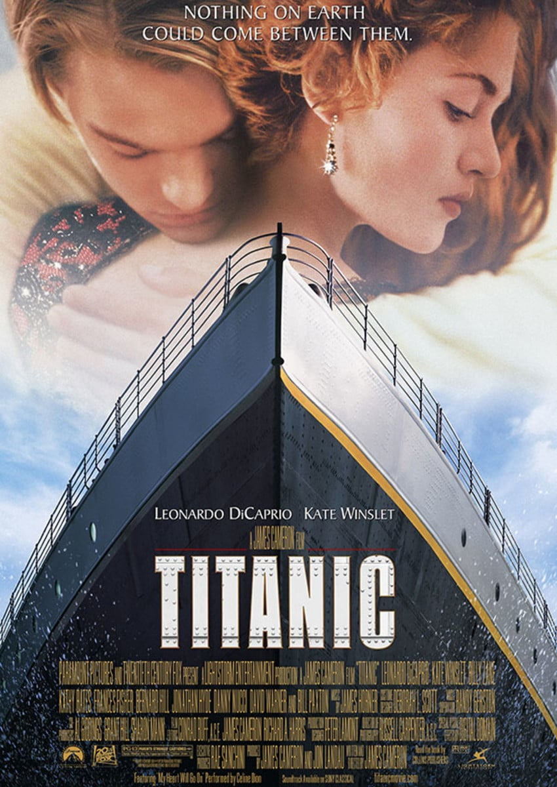
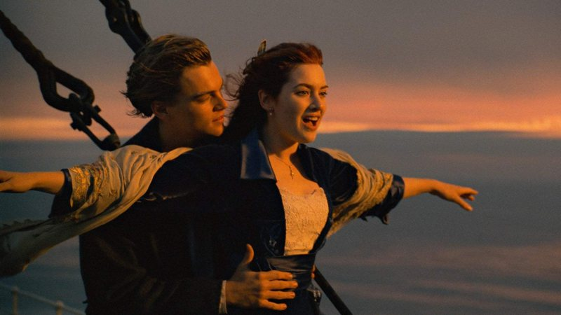

Em 1996, o caçador de tesouros Brock Lovett e sua equipe exploram os destroços do RMS Titanic, à procura de um colar de diamante chamado de Coração do Oceano. Eles recuperam o cofre de Caledon "Cal" Hockley, acreditando que o colar encontra-se guardado, porém acabam encontrando apenas um desenho de uma mulher nua usando o colar, datado de 14 de abril de 1912, dia em que o Titanic colidiu com um iceberg. Uma idosa chamada Rose Dawson Calvert, vendo o desenho numa reportagem de TV a respeito da expedição, liga para Lovett e afirma ser a mulher retratada, viajando logo em seguida até o navio de pesquisa junto com sua neta Lizzy. Ao ser perguntada sobre o diamante, Rose lembra de seu tempo a bordo do Titanic, revelando ser Rose DeWitt Bukater, uma passageira de primeira classe que acreditava-se estar morta.
Titanic é um filme épico histórico romântico americano de 1997 , escrito e dirigido por James Cameron . Incorporando elementos históricos e ficcionais, é baseado nos relatos do naufrágio do RMS Titanic em 1912. Leonardo DiCaprio e Kate Winslet estrelam como membros de diferentes classes sociais que se apaixonam durante a fatídica viagem inaugural do navio. O elenco inclui Billy Zane , Kathy Bates , Frances Fisher , Bernard Hill , Jonathan Hyde , Danny Nucci , David Warner e Bill Paxton .

